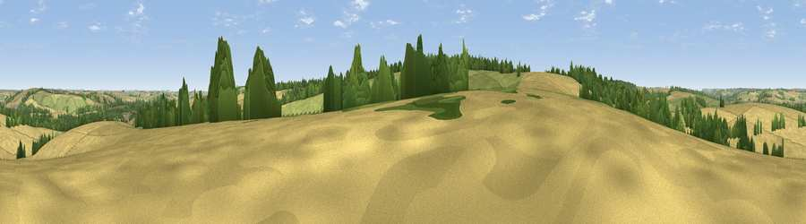

Viewpoint near Stockton
#23185 in England · top 35% of its area beats it · near StocktonThe view, rendered

A 360° render of this exact spot computed from the terrain model, tree cover and land cover — summer colours, afternoon light, calibrated against photographs of famous viewpoints. Real trees, hedges and buildings will differ in detail.
The panorama
Grey silhouette: terrain skyline in each direction (720 bearings, Earth curvature and refraction included). Dashed green: skyline with trees (+15 m) and buildings (+8 m) as obstacles. Blue strip: how far the ground is visible on each bearing.
Where the view opens
Wedge length = distance to the farthest visible ground on that bearing (vegetation-aware). Rings at 10, 25 and 50 km.
What fills the view
53% cropland · 32% grassland · 15% woodland
Angular shares of the visible panorama (visual magnitude), not map area. Landscape diversity 0.43 (0–1 Shannon).
Key numbers
More beautiful places nearby
The staircase of upgrades: each row has a higher view potential than everything closer. Driving times are estimates from straight-line distance, calibrated against real road routing — check an actual route before setting out.
| Place | Direction | Drive | Score |
|---|---|---|---|
| Viewpoint near Sherrington | W · 2 km | ~5 min | 52.0 |
| West Hill | ESE · 4 km | ~9 min | 59.0 |
| Viewpoint near Codford | NNE · 4 km | ~9 min | 60.2 |
| Viewpoint near Fonthill Gifford | SW · 9 km | ~18 min | 64.2 |
| Haddon Hill | WSW · 11 km | ~21 min | 64.6 |
| Viewpoint near West Knoyle | WSW · 11 km | ~21 min | 66.4 |
| Viewpoint near Monkton Deverill | W · 13 km | ~23 min | 70.9 |
| Cley Hill | WNW · 16 km | ~28 min | 76.8 |
51.13069, -2.04175 · source: screening · position refined by local search. Computed location — check access rights before visiting.